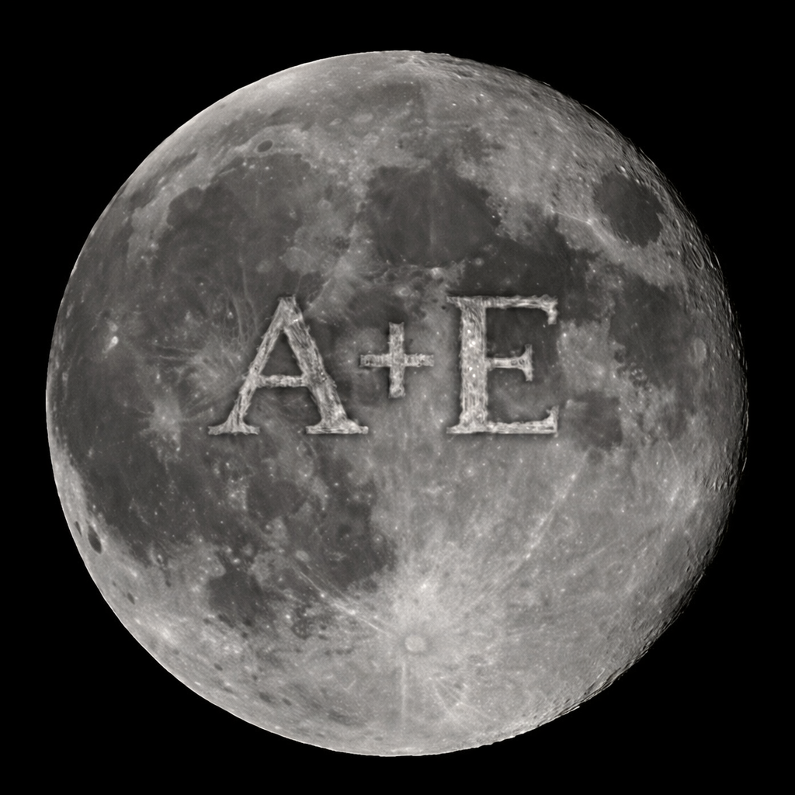

"desde los ojos de un loco por ti"
Te Amo Barragan Pereyra Maria Angelica
te amo porque te amo porque en el amor nadie manda, te amo porque te amo, te amo con toda mi alma
te amo con toda mi vida eres la mujer mas hermosa del mundo y puedo decir que tienes los ojos mas bonitos
que he tenido la fortuna de ver y la mujer mas hermosa que e tenido la fortuna de conocer aun nose que valla a ser
de nosotros pero pase lo que pase se que estaremos bien y si no es asi me tocara vivir infeliz por el resto de la vida
pero de mientras seguire amandato asta donde me lo permitas y aunq eso no me asegure que sea mucho tiempo dare todo de
mi para hacerte sentir amada porque "Maldito sea yo mil veces si no dedico toda mi vida, toda
mi alma y todas mis fuerzas a hacerte feliz"
en verdad "no hay nada que me haga mas feliz que verte a ti feliz", simplemente al mirarte no puedo dejar de sonreir
cuando de la misma manera tu me sonries, cuando me bromeas y estoy tan serca de ti me deja de importar los besos que
aun que me muero dia y noche por un beso tuyo me gusta mas ver tu carita de tan serca como entrecierras tus hermosos
ojos y el como me sonries no tiene sentido lo bien que me hace sentir, antes diria "daria todo por un beso tuyo" pero
solo el mirarte asi de cerca y me sonrias asi no se comparan con nada
en serio te amo, por lo facil que me comprendes o cuando no lo es te tomas el tiempo de tratar de ayudarme pero siempre
logras hacerme sentir bien a tu manera eres una increible persona y me encanta tu forma de ser, aunque digas que como es
posible que me gustes no me cansare de decirte lo hermosa y increible persona que eres para mi o al menos es como te veo
y aunque digas que necesito lentes nunca cambiare de opinion porque "aunque me arrancaran los ojos seguiria seguro de lo hermosa y lo enamorado que estaria
de ti "
jamas pense volver a enamorarme de esta forma aun que en verdad siento que jamas me e enamorado tanto como lo estoy de ti
porque ni si quiera me explico el porque me nace ser o tratar de ser amoroso contigo y es que simplemente me nace estar pegado a ti
, jamas pense que encontraria a alguien como usted pero me encantas tanto que no me importa el tiempo que pase o el poco tiempo que llevemos
quiero mostrarte lo tanto que quiero algo contigo y lo enamorado que estoy por ti y por eso pasen los dias que pasen te mostrare mi amor de la
unica forma que se, siendo empalajozo asta que te artes de mi 💗
cuando miro eso hermosos hojos que tienes, me es imposible creer que se fijaron en mi, tan hermosos que de solo verlos no puedo pensar en otra cosa
mas que en ellos en verdad son los ojos mas preciosos que e visto y que quiero ver todos los dias por el resto de mi vida quiero que estes tu ahi sin
importar de que forma, solo quiero que estes conmigo, "solo nosotros dos y nadie mas"
aunque me digas que no sabes que me gusto de ti, no podria contestarte porque no me gusto solo una cosa de ti me gusto TODO de ti eres perfecta
para mi en todos los aspectos aunq digas que no y te hagas menos para mi siempre seras la mujer mas hermosa del mundo y la verdad con el simple echo
que seas tu es suficiente razon como para obsecionarme contigo al punto al que estoy hoy a las 3:20am escribiendote esto porque en verdad estoy tan enamorado de ti
que lo unico que pienso es en ti y la verdad nose porque pero me "ME ENCANTA PENSAR EN TI"

Eres todo para mi, todo lo que pienso dia y noche aveces no puedo ni siquiera creer que esto sea real, porque es tan hermoso
que no se siente real como si viviera en un sueño el cual ni en las mejores noches pudiera soñar "eres el sueño de una noche unica
echo realidad" y solo quiciera poder soñar contigo noche tras noche porque aunque no pueda estar contigo en persona quiciera poder
verte cada noche siendo mi luna cada noche
Que bonita se ve la luna con nuestras iniciales gravadas o no?

aunque solo llevemos:
cargando